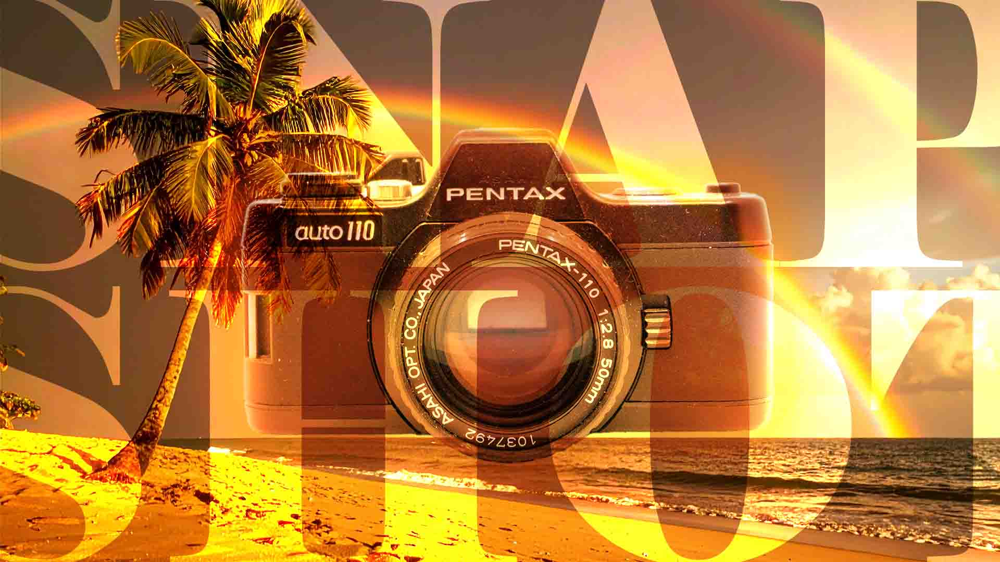
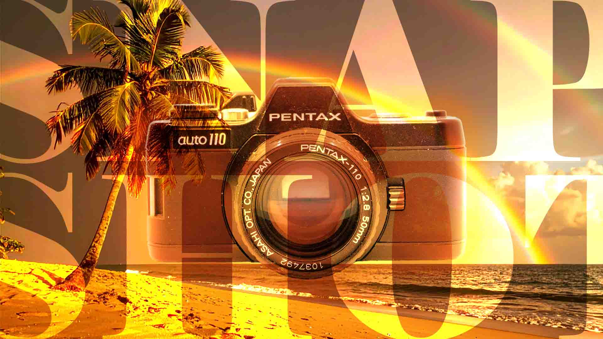
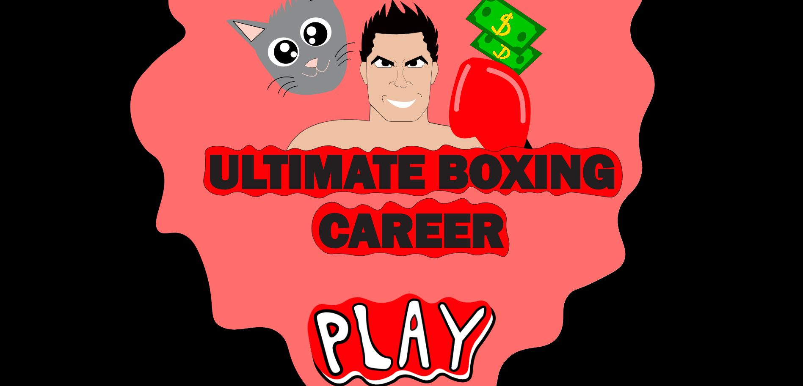
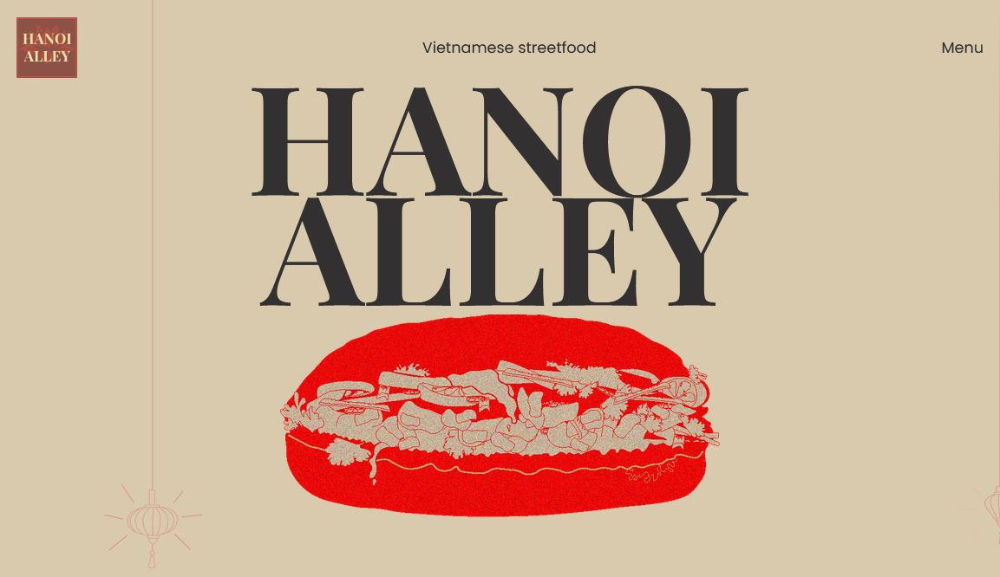

Jeg er er en idérig og kreativ person, som er passioneret, når jeg får chancen for at udtrykke mine skills. Kombinationen af de to ting gør at jeg altid kommer med effektive løsninger. Jeg er især glad for at arbejde med UI elementer, 2D grafik, animation, motion graphics og videoproduktion, og disse elementer af min uddannelse har jeg lært at udvikle med Figma og Adobe programmer, hvor jeg implementerer det i en masse iterationer af prototyper.
Sebastian Robert Mentzel
Multimediedesigner - Motion Graphics - 2D Graphics - UI-design

Praktikforløb
Hej, jeg hedder Sebastian. Jeg studerer multimediedesign på Erhvervsakademiet København. Jeg søger 10 ugers, ulønnet fuldtidspraktik fra januar, og jeg tilbyder at kunne udvikle visuel identitet, 2D vectorgrafik og bitmap-grafik, motion grafik, videoproduktion. Det interesserer mig meget at kunne udøve mine kreative evner i praksis, og jeg er meget motiveret for at få mere erfaring og lære fra andre. Jeg er en hurtig lærende person, som er god til at samarbejde i teams og tage imod feedback.
Kvalifikiatoner
På min uddannelse som Multimediedesigner, så er jeg blevet rigtig god til at udnytte min kreativitet til at producere 2D grafik, UI-design og tænke rigtigt i forhold til designpricipper, når det kommer til at udvikle visuelt værk. Jeg har lært at udvikle design til hjemmesider fra bunden af i figma og skabe indhold ved brug af Adobe programmer som Illustrator, After Effects, Photoshop og Premiere Pro. Derudover har jeg også udviklet projekter i et par år nu i min fritid, hvor jeg mest gar brugt Premiere Pro og Photshop til Production af videoindhold.
For at se nogle af mine egne projekter relateret til min videoindholdsproduktion i min fritid, så kan se playlisten her: Sebastian Mentzel - YouTube Jeg har også lavet forsiderne til videoerne i Photoshop, så her er nogle projekter fra Photoshop, som jeg selv har lavet:


 



‹
›
Uddannelse
Erfaring
Jeg har fået en masse erfaring til at udvikle design, stil, layout og visuelt udtryk i Figma.
Jeg har lært at bruge Adobe programmerne: Illustrator (udvikling af 2D grafik og fonte), Premiere Pro/After Effects (effekter og motion graphics), Photoshop (Udvikling af bitmap grafik).
På min uddanelse har jeg dannet mig skills til at visualisere mine kreativitet med en kombination af 2D graphics, motion grafik,
Projekter under uddanelse
Ten Pillars Coffee

I dette projekt arbejde jeg i en gruppe på 3 personer. Jeg stod for struktur, orden tidsplanlægning, design af cards. Derudover var jeg med til valg af farvepalette og videoindhold.
Ten Pillars - Virksomhedscase - Gruppe-Eksamensprojekt(Virker bedst på firefox)
Ultimate Boxing Career
Dette projekt er fra 1. semester, hvor jeg for første gang udviklede et spil helt selv fra bunden af med alle visuelle elementer, som er skitseret på papir og efterfølgende rentegnet i illustrator og eksporteret som SVG til min hjemmeside i VS-code.
Instant Day - 3. Semester Team opgaveHanoi Alley
Dette er et teamprojekt fra 1. semester, hvor vi udviklede en webløsning for en vietnamesisk restaurant. Jeg stod mest for struktur, orden tidsplanlægning og idéer til udvikling af design elementer såsom font, tekstur, 2D baggrunds illustrationer og ikoner.
Hanoi Alley - Virksomhedscase - 1. Semester Team opgave